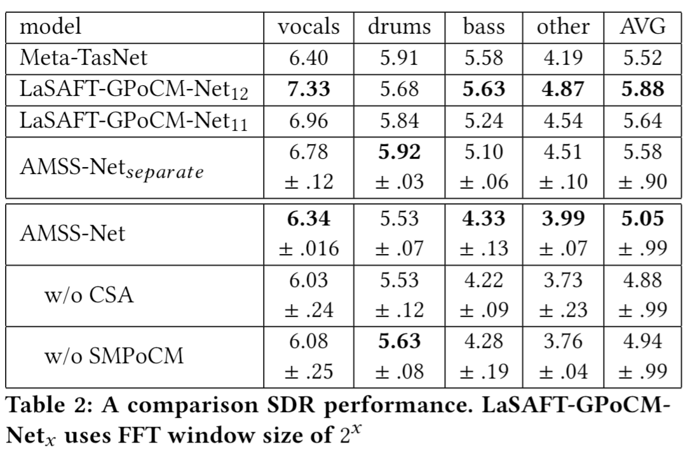

<!doctype html>
<html>
	<head>
		<meta charset="utf-8">
		<meta name="viewport" content="width=device-width, initial-scale=1.0, maximum-scale=1.0, user-scalable=no">

		<title>Woosung Choi - Dissertation</title>

		<link rel="stylesheet" href="dist/reset.css">
		<link rel="stylesheet" href="dist/reveal.css">
		<link rel="stylesheet" href="dist/theme/white.css">

		<!-- Theme used for syntax highlighted code -->
		<link rel="stylesheet" href="plugin/highlight/monokai.css">
	</head>
	<body>
		<div class="reveal">
			<div class="slides">

				<section data-markdown data-separator="---$" data-separator-vertical="--">
					<script type="text/template">
						## Deep Learning-based Latent Source Analysis for Source-aware Audio Manipulation

						Woosung Choi (ws_choi@korea.ac.kr)
		
						--
		
						#### Deep Learning-based
						#### Latent Source Analysis 
						#### for Source-aware Audio Manipulation
		
						Woosung Choi (ws_choi@korea.ac.kr)
		
						Ph.D. Candidate, Department of Computer Science
		
						College of Informatics, Korea University
		
						June 01, 2021
		
						--
		
						Supervisor: Prof. Soonyoung Jung

						--

						## Opening BGM
						<audio controls src="assets/www_vocals.mp3" data-autoplay>Opening bgm</audio>

						--
						## Audio Manipulation on Specified Sources!
						
						- What a wonderful world - Louis Armstrong
						
						<iframe width="560" height="315" src="https://www.youtube.com/embed/p42esUHqq8Q?start=16" title="YouTube video player" frameborder="0" allow="accelerometer; autoplay; clipboard-write; encrypted-media; gyroscope; picture-in-picture" allowfullscreen></iframe>

						```python
						model.manipulate_track(audio.T, "remove vocals") 
						```
					</script>
				</section>

				<section data-markdown data-separator="---$" data-separator-vertical="--">
					<script type="text/template">
						## Contents
						
						- <b>Introduction</b>
						- Part 1: FTB for Source Separaton
						- Part 2: Latent Source Analysis for Source Separation
						
						- <b>Part 3: Beyond Source Separation: AMSS!</b>
						- <b>Conclusion</b>

						---

						### Introduction

						- It is difficult for non-experts to edit multimedia content such as image, audio, and video.

						

						--

						### Object Removal with Photoshop

						

						https://digitalsynopsis.com/design/photoshop-remove-unwanted-objects-content-aware-fill/

						--

						### Image Inpainting - Nvidia

						- When deep learning meets image editing

						 

						https://www.nvidia.com/en-us/research/ai-playground/

						--
						
						### Image Inpainting - Nvidia

						- When deep learning meets image editing

						

						https://www.nvidia.com/en-us/research/ai-playground/
										
						--
						
						### Describe What To Change!

						

						Liu, Yahui, et al. "**Describe What to Change**: A Text-guided Unsupervised Image-to-Image Translation Approach." Proceedings of the 28th ACM International Conference on Multimedia. 2020.

						--

						### AI-based Image Editing Tools!
						

						--

						### Meanwhile, Interfaces for Audio ...

						

						It's massive!

						--

						### Audio Editing	

						- In general, we want to edit specific objects in the given audio
							- e.g., I want to decrease the volume of drums 
							- (but don't want to mute them)
						- However, multitrack is usually not observable for non-experts

						--

						### Audio editing is more challenging 

						

						- A sound object (i.e., a waveform sample or frequency bin) is `transparent'
						- It usually carries information from multiple sources, in contrast to a pixel in an image

						--

						### The goal of this dissertation
						<p class="fragment" data-fragment-index="2">To design a neural network </p> 
						<p class="fragment" data-fragment-index="3">that performs audio transformations to user-specified sources (e.g., vocals) of a given audio track </p>
						<p class="fragment" data-fragment-index="4">according to a given description while preserving other sources not mentioned in the description</p>
						<br>
						<p class="fragment" data-fragment-index="5">, also known as AMSS!</p>
					
						--
						<center>
						<blockquote class="twitter-tweet"><p lang="en" dir="ltr">Audio source separation is boring. AMSS is the new cool thing now! Next step I guess is stg like Siri integration into Logic, &quot;Siri, a bit more warmth to vocals, and make the guitar tone more brown. Please.&quot; <a href="https://twitter.com/hashtag/sourceseparation?src=hash&amp;ref_src=twsrc%5Etfw">#sourceseparation</a> <a href="https://twitter.com/hashtag/audioseparation?src=hash&amp;ref_src=twsrc%5Etfw">#audioseparation</a> <a href="https://t.co/VJcKT3JtY7">https://t.co/VJcKT3JtY7</a></p>&mdash; András Barják (@Forevian) <a href="https://twitter.com/Forevian/status/1391492024583561218?ref_src=twsrc%5Etfw">May 9, 2021</a></blockquote> 
						</center>
						--

						### Terminologies
						<p class="fragment" data-fragment-index="2"><b>audio signal</b>: a series of sampled values</p> 
						<p class="fragment" data-fragment-index="3"><b>frequency</b>: the number of occurrences of a repeating event per unit of time </p>
						<p class="fragment" data-fragment-index="4"><b>timbre</b>: perceived sound quality of a musical note, </p>
						<p class="fragment" data-fragment-index="5">, which makes a particular musical instrument or human voice have a different sound from anothe </p>

					</script>

				</section>

				<section data-markdown data-separator="---$" data-separator-vertical="--">

					<script type="text/template">
						## Teaser demonstration

						--

						### Part 1: [FTB for Source Separaton](https://www.aicrowd.com/challenges/music-demixing-challenge-ismir-2021/leaderboards?challenge_leaderboard_extra_id=675&challenge_round_id=886)

						--

						### Part 2: Latent Source Analysis for Source Separation

						[](https://paperswithcode.com/sota/music-source-separation-on-musdb18?p=lasaft-latent-source-attentive-frequency)
						
						--

						### Part 3: Beyond Source Separation: AMSS!
						
						Demostration: What AMSS-Net can perform

						--

						### Prograssive Manipulation (1)

						- An audio clip may contain noises
							- such as people shouting noise in the middle of a concert.
						- For example, in the above youtube (from the movie Begin again),
							- a man shouts
								- (starting from 0:08 in the original audio clip in the table below)
							- in the middle of a rooftop busking to ask them to stop playing

						<center>
							<iframe width="560" height="315" src="https://www.youtube.com/embed/3euj8m2_pug?rel=0&start=199&end=209&amp;controls=0&amp;showinfo=0frameborder=0" allowfullscreen></iframe>						
						</center>

						--

						### Prograssive Manipulation (1)

						- We can also observe *reflections of some sounds*, especially from the kick drums, which might annoy some listeners.
						- We perceive them more severe when we increase the volume of those instruments (the operation 1 in the table below)
						- Then, we can make a better audio clip to remove unwanted sounds or remove the *reverberation effect* with AMSS-Net as follows.

						<center>
							<iframe width="560" height="315" src="https://www.youtube.com/embed/3euj8m2_pug?rel=0&start=199&end=209&amp;controls=0&amp;showinfo=0frameborder=0" allowfullscreen></iframe>						
						</center>

						--

						<font size=4em>
						<table>
							<thead>
							  <tr>
								<th>order</th>
								<th>description</th>
								<th style="text-align: center">Audio</th>
								<th style="text-align: center">Spectrogram</th>
							  </tr>
							</thead>
							<tbody>
							  <tr>
								<td>0</td>
								<td>original</td>
								<td style="text-align: center"><audio controls="" class="audio-player" preload="metadata"><source src="https://kuielab.github.io/AMSS-Net/audios/beginagain original.mp3" type="audio/mp3"></audio></td>
								<td style="text-align: center"></td>
							  </tr>
							  <tr>
								<td>1</td>
								<td>increase the volume of drums</td>
								<td style="text-align: center"><audio controls="" class="audio-player" preload="metadata"><source src="https://kuielab.github.io/AMSS-Net/audios/beginagain increase the volume of drums.mp3" type="audio/mp3"></audio></td>
								<td style="text-align: center"></td>
							  </tr>
							  <tr>
								<td>2</td>
								<td>remove reverb from bass, drums</td>
								<td style="text-align: center"><audio controls="" class="audio-player" preload="metadata"><source src="https://kuielab.github.io/AMSS-Net/audios/beginagain remove reverb from bass, drums.mp3" type="audio/mp3"></audio></td>
								<td style="text-align: center"></td>
							  </tr>
							  <tr>
								<td>3</td>
								<td>mute vocals</td>
								<td style="text-align: center"><audio controls="" class="audio-player" preload="metadata"><source src="https://kuielab.github.io/AMSS-Net/audios/beginagain mute vocals.mp3" type="audio/mp3"></audio></td>
								<td style="text-align: center"></td>
							  </tr>
							</tbody>
						  </table>		
						</font>				

					</script>
				</section>

				<section data-markdown data-separator="---$" data-separator-vertical="--">
					<script type="text/template">
						### Part 1: FTB for Source Separation

						--

						### Part 1: FTB for Source Separation
						
						1. **review**: a U-Net for Spectrogram-based Source Separation
						2. **motivation**: Spectrogram $\neq$ Image
							 - What's wrong with CNNs and spectrograms for audio processing?
							 - Alternatives: 1-D CNNs, Dilated CNNs, FTBs, ...
						3. **solution:** Frequency Transformation Blocks
							 - Employing Fully-Connected (FC) Layers to capture Freq-to-Freq Dependencies
							 - (empirical results) Injecting FCs, called FTBs,  into a Fully 2-D Conv U-Net significantly improves SDR performance
						
						--

						### 1.1. Review: Source Separation

						- separates signals of the specific source from a given mixed-signal
						- Music Source Separation, Speech Enhancement, ...
							<center>
							
							</center>
						- Benchmarks
							- [MUSDB18](https://paperswithcode.com/dataset/musdb18)
							- [DNS Challenge (Deep Noise Suppression Challenge)](https://paperswithcode.com/dataset/deep-noise-suppression-2020)
							- [FUSS(Free Universal Sound Separation)](https://paperswithcode.com/dataset/fuss)
						
						--
							 
						### 1.1. Spectrogram-based Source Separation
							
							- Audio Equalizer - Eliminate signals with unwanted frequencies
							
							
							- Spectrogram-based Source Separation
							1. Apply Short-Time Fourier Transform (STFT) on a mixture waveform to obtain the input spectrograms.
							2. Estimate the vocal spectrograms based on these inputs 
							3. Restore the vocal waveform with inverse STFT (iSTFT).
							
						-- 
							 
						### 1.1. Review: U-Net For Spectrogram-based Separation
						
						- Naive Assumption
							- Assuimg a spectrogram is a two (left and right) - channeled image
							- Spectrogram-based Source Separation can be viewed as an Image-to-Image Translation
							
						<center>
						
						</center>

						--
							 
						### 1.1. Review: U-Net For Spectrogram-based Separation (2)
						
						- ..., and it works...!
						- Jansson, A., et al. "Singing voice separation with deep U-Net convolutional networks." 18th International Society for Music Information Retrieval Conference. 2017.
						- Takahashi, Naoya, and Yuki Mitsufuji. "Multi-scale multi-band densenets for audio source separation." 2017 IEEE Workshop on Applications of Signal Processing to Audio and Acoustics (WASPAA). IEEE, 2017.

						--

						### 1.1. Review: U-Net For Spectrogram-based Separation (3)
						
						- Recall the assumption of this approach:
							- Assuming a spectrogram is a two (left and right) - channeled image
							- Spectrogram-based Source Separation $\approx$ Image-to-Image Translation
							- (empirical results) **Fully 2-D Convs** can provide promising results

						- Reality Check: Spectrogram $\neq$ Image
							
						--
						
						### 1.2. Motivation: Spectrogram $\neq$ Image
						
						- Image
							
						
						- Spectrogram
							
						
						--

						### 1.2. Review: [convolutional](https://mlnotebook.github.io/post/CNN1/)

						

						--
							 
						### 1.2. Motivation: Spectrogram $\neq$ Image
						
						- [What's wrong with CNNs and spectrograms for audio processing?](https://towardsdatascience.com/whats-wrong-with-spectrograms-and-cnns-for-audio-processing-311377d7ccd)
						- The axes of spectrograms do not carry the same meaning
							- ***spatial invariance*** that 2D CNNs provide might not perform as well
						- The spectral properties of sounds are non-local
							- Periodic sounds are typically comprised of a fundamental frequency and a number of **harmonics** which are spaced apart by relationships dictated by the source of the sound. It is the mixture of these harmonics that determines the timbre of the sound.
						
						
						
						--
							 
						### 1.2. Motivation: Harmonics and Timbre
						
						 
					
						Harmonics 
						
						
						
						Timbre of 'Singing Voice' - decided by resonance patterns
						
						--
						
						### 1.3. Proposed Method: FTB
						
						- FTB: Frequency Transformation Blocks
							- Time-Distributed Fully-Connected Layer ([TDF](https://lightsaft.github.io/slide/gaudio/#17))

						

						- Building Block TFC-TDF: Densely connected 2-d Conv (TFC) with TDFs
						
						
						
						--

						
						### 1.3. Proposed Method: U-Net with TFC-TDFs

						<center>
						  
						
						<p>+</p> 
						
						
						</center>
						
						--
						
						### 1.3. Results?
						
						- Ablation (n_fft = 2048)
						- U-Net with 17 TFC blocks: SDR 6.89dB
						- U-Net with 17 TFC-**TDF** blocks: SDR 7.12dB (+0.23 dB)
						
						- Large Model (n_fft = 4096)
						
						
						--
						
						### 1.3. Why does it work?: Weight visualization
						
						- freq patterns of different sources captured by TDFs, of FTBs
						
						

						--
						
						

					</script>

				</section>
				<section data-markdown data-separator="---$" data-separator-vertical="--">
					<script type="text/template">
						### Part 2: Latent Source Analysis for Source Separation

						--

						### Part 2: Latent Source Analysis for Source Separation

						- **review**: Conditioned-U-Net for Conditioned Source Separation
						
						- **motivation**: Extending FTB to Conditioned Source Separation
							- Naive Extention: Injecting FTBs into C-U-Net?
							- (emprical results) It works, but ...
						- **solution:** Latent Instrumant Attentive Frequency Transformation 
						- **how to modulate latent features**: more complex manipulation method than FiLM

						--

						### 2.1. Review:  C-U-Net

						- Conditioned-U-Net extends the U-Net by exploiting Feature-wise Linear Modulation (FiLM)

						

						```bibtex
						Meseguer-Brocal, Gabriel, and Geoffroy Peeters. "CONDITIONED-U-NET: INTRODUCING A CONTROL MECHANISM IN THE U-NET FOR MULTIPLE SOURCE SEPARATIONS." Proceedings of the 20th International Society for Music Information Retrieval Conference. 2019.
						```

						--

						#### 2.1. Review: C-U-Net using Feature-wise Linear Modulation

						

						--
						
						### 2.2. Motivation: Naive Extention
						
						

						TFC vs TFC-TDF: above our expectation

						- Although it does improve SDR performance by capturing common frequency patterns observed across all instruments,
						- Merely injecting an FTB to a CUNet **does not inherit the spirit of FTBs**
						- We propose the Latent Source-Attentive Frequency Transformation (LaSAFT), a novel frequency transformation block that can capture instrument-dependent frequency patterns by exploiting the scaled dot-product attention

						--
						
						### 2.2. Motivation: Latent Source
						- Extending TDF to the Multi-Source Task
						- Naive Extension: MUX-like approach
							- A TDF for each instrument: $\mathcal{I}$ instrument => $\mathcal{I}$ TDFs
							

						- There are much more 'instruments' we have to consider in fact
							- female-classic-soprano, male-jazz-baritone ... $\in$ 'vocals' 
							- kick, snare, rimshot, hat(closed), tom-tom ... $\in$ 'drums'
							- contrabass, walking bass piano (boogie woogie) ... $\in$ 'bass'  
						
						--

						#### 2.3. Latent Source-attentive Frequency Transformation

						- We assume that there are  $\mathcal{I}_L$ latent instruemtns
						  - string-finger-low_freq
						  - string-bow-low_freq
						  - brass-high-solo
						  - ...
						- We assume each instrument can be represented as a weighted average of them
						  - bass: 0.7 string-finger-low_freq + 0.2 string-bow-low_freq + 0.1 percussive-low						
						- LaSAFT
						  - $\mathcal{I}_L$ TDFs for  $\mathcal{I}_L$ latent instruemtns
						  - attention-based weighted average
						
						--
												
						### 2.3. LaSAFT: Extending TDF to the Multi-Source Task 

						- Conceptual View of LaSAFT
						- Suppose there are $\mathcal{I}$ instruments in the dataset
						- We use $\mathcal{I}_{L}$ TDFs
							- , where $\mathcal{I}_{L}>\mathcal{I}$
						- For condition vector $C$, we attentively aggregate the TDFS' results.

						- Effects of employing LaSAFTs instead of TFC-TDFs

						

						--

						#### 2.4. GPoCM: more complex manipulation than FiLM
						
						

						FiLM: Feature-wise Linear Modulation

						
						
						PoCM: Point-wise Convolutional Modulation

						--
						#### 2.4. GPoCM: more complex manipulation than FiLM

						- PoCM is an extension of FiLM. 
						  - while FiLM does not have inter-channel operations
						  - PoCM has inter-channel operations

						  

						--
						
						## Experimental Results

						

						--

						## LaSAFT + GPoCM

						- achieved [state-of-the-art](https://paperswithcode.com/sota/music-source-separation-on-musdb18?p=lasaft-latent-source-attentive-frequency) SDR performance on vocals and other tasks in Musdb18.

						
						news: outdated :(
					</script>
				</section>
	
			<section data-markdown data-separator="---$" data-separator-vertical="--">
				<script type="text/template">
					### Part 3. Audio Manipulation with Textual Queries
					- Contents
						- Task Definition
							- Formal Definition of AMSS
							- AMSS VS Source Separation
							- Scope of the Research
						- Challenge 1: How to build an easy-to-use <b>interface</b>
						- Challenge 2: How to make <b>training dataset</b>?
						- Challenge 3: How to address <b>tranparency</b>
						- AMSS-Net!
					
					--

					### 3.1. AMSS					
					- AMSS is formally defined as follows:
						- for the given audio track $A$ and a description $S$,
						- the AMSS aims to generate a manipulated audio track $A'$ that semantically matches $S$
						- while preserving contents in $A$ that are irrelevant to $S$,
						- where $A$ contains signals from multiple sources and $S$ describes how to manipulate audio signals from specific sources in $A$.

					--

					### 3.1. AMSS VS Source Separation

					- A source separation task can be viewed as an AMSS task where we want to simply all mute the unwanted sources.

					- AMSS-Net can perform source separation as well!

					

					--

					### 3.1. Scope of the research
					
					- As a proof-of-concept, this paper aims to verify that it is possible to train a deep learning model for AMSS.
					- We focus on modifying specific sources' sonic characteristics (e.g., loudness, panning, frequency content, and dereverberation).

					
					
					--
					### Challenge 1: How to build an easy-to-use <b>interface</b>

					=> 3.2. Design a Natural Language-like Interface

					--

					### 3.2. Designing Audio Manipulation Language

					- Natural Language-like interface is proposed 
						- based on a probabilistic Context-Free Grammar (pCFG)
					- [Full Grammar](https://kuielab.github.io/AMSS-Net/aml.html) is available online
					- Query Examples
						```python
						model.manipulate_track(audio, 'decrease the volume of bass') 
						model.manipulate_track(audio, 'pan vocals completely to the left side') 
						model.manipulate_track(audio, 'apply heavy lowpass to drums, vocals') 
						model.manipulate_track(audio, 'apply medium highpass to vocals, drums') # == apply highpass to drums, vocals 
						model.manipulate_track(audio, 'separate vocals, bass, drums') # == extract vocals, drums, bass
						model.manipulate_track(audio, 'mute bass, drums')  # == get rid of drums, bass
						model.manipulate_track(audio, 'remove reverb from drums, bass') 
						```
					
					--
					
					### 3.2. Attention-based Description Encoder

					- The proposed model captures the meaning of the given query
					- by employing an RNN with an attention mechanism

					--
					
					### Challenge 2: How to make training dataset

					=> 3.3. Design AMSS triple generators for Supervised AMSS Training

					--

					### 3.3.  How to make training dataset for AMSS?

					- Supervised AMSS training
						- Provided a dataset of triples $\{(A^{(i)}, A'^{(i)}, S^{(i)})\}_{i=1}^{N}$, 
							- we can train $net$, a neural network, for AMSS in a supervised manner by minimizing $\sum_{i=1}^{N}loss(net(A^{(i)}, S^{(i)}), A'^{(i)})$, where $loss$ is a distance metric such as $L_{2}$.
						
						- However, there were no datasets available that directly address AMSS currently.
							- For AMSS training, we propose a training framework that uses a multitrack dataset such as Musdb18
							- By applying Digital Signal Processing (DSP) to target sources of a given multitrack audio file, we can generate an AMSS triple on-the-fly.

					--
					#### 3.3. AMSS triple generators for Supervised AMSS Training

					- $\sum_{i=1}^{N}loss(net(A^{(i)}, S^{(i)}), A'^{(i)})$,
					  - $A^{(i)}$: audio before manipulation
					  - $A'^{(i)}$: audio after manipulation
					  - $S^{(i)}$: description
					
					- An example of AMSS triple generator based on DSP
					  
					
					--

					#### Challenge 3: How to address tranparency ?
					
					=> 3.4. Via Latent Source Analysis!

					--

					#### 3.4 Recall that: Sound objects are `transparent'
					  
					  - DWTC cannot directly address AMSS becuase audio $\neq$ image
					  - Unlike images, sound objects are `transparent';
						- a pixel in an image generally corresponds to a single visual object, 
						- whereas a sound object (e.g., a sample in a wave, a frequency bin in a spectrogram) does not only carry information of a single source.
					  
						
					  
					--
					
					### 3.5. AMSS-Net

					--

					### 3.5. Conceptual View of AMSS-Net
					
					
					
					- extract ***latent source channels*** from a mixture into latent source
					- and ***selectively manipulates*** the feature map,
					- while preserving irrelevant latent sources.
					
					--
					
					### 3.5. Latent Sources

					- A **latent source** deals with 
						- **a more detailed acoustic feature** than a symbolic-level source
					- We are used to categorizing symbolic-level classes of sources 
						- such as ‘vocals,’ ‘drums’ or ‘bass.’
					- However, in fact, for AMSS,
						- there are much more ‘instruments’ or sources we have to consider
					- For example,
						- lower frequency band of female-classic-soprano … ∈ ‘vocals’
						- kick, snare, rimshot, hat(closed), tom-tom … ∈ ‘drums’
						- contrabass, walking bass piano (boogie-woogie) … ∈ ‘bass.’
						
					--

					### 3.5. What if...?
					
					- What if 
						- we can isolate each latent source into a single channel of a tensor?

					


					--

					### 3.5. Latent Sources (2)

					- Such latent source-level analysis enables AMSS-Net 
						- to perform delicate manipulation for the given AMSS task
					- We designed AMSS-Net 
						- to perform latent source-level analysis for the given audio
					- We assume that
						- a weighted sum of latent sources can represent a source
					
						
					

					--
					
					### 3.5. The AMSS-Net Architecture
					
					- The AMSS-Net is a Spec2Spec U-Net with a Conditioning Mechanism
					- Overview: 
						1. Description Encoder $E_{desc}$
						2. Encoding blocks $E_{i}$
						3. Decoding blocks $D_{i}$ 
						4. An Aggregation block ***AggPoCM***
					
						 

					--
					
					### 3.5. The AMSS-Net Architecture

					
					- The AMSS-Net is a Spec2Spec U-Net with a Conditioning Mechanism
					- Overview: 
						1. Description Encoder $E_{desc}$: <u>a GRU-based Encoder</u>
						2. Encoding blocks $E_{i}$: <u>a densely connected CNNs with TDF</u>
						3. Decoding blocks $D_{i}$ 
						4. An Aggregation block ***AggPoCM***
					
						 
										
					--
					
					### 3.5. Decoding Block
										
					- Input
						- $X_{D}^{K}$: features from the previous decoding block
						- $X_{E}^{K}$: features from the skip connection
						- $w\in \mathbb{R}^{L\times E}$: word features
					
						

					--
					
					### 3.5. Decoding Block: Latent Source Extraction
									
					- Internel features
						- $V^{ch}\in\mathbb{R}^{M\times T \times F}$: extracted features of latent sources
					- We assume that
						- each latent source is isolated in a separate channel
					
						
					
					--
					
					#### 3.5. Decoding: Selective Manipulation based on three PoCMs
										
					- Internel features
						- $V^{ch}\in\mathbb{R}^{M\times T \times F}$: extracted features of latent sources
					- $V'^{ch} \in\mathbb{R}^{M\times T \times F}$: selectively manipulated features
						- if $i^{th}$ latent source should be preserved for the given input, then the $i^{th}$ channel of $V'^{ch}$ would be trained to have near zero values.
					
						

					--

					#### 3.5. Decoding: Selective Manipulation based on three PoCMs
					  
					=> Recall that we desgined PoCM in our [previous work](#/5/8)
						
					--
			  
					### 3.5. Decoding Block: SMPoCM
					
					- SMPoCM
						- Selective Manipulation by Point-wise Convolutional Modulation
						- Inspired by LSTM cells
					
					- $SMPoCM(X|\theta) = (1-s) \odot X + g \odot tanh(PoCM(s \odot X, \theta_{m}))$
						- , where
							- $s=PoCM(X, \theta_{s})$: selective gate
							- $tanh(PoCM(s \odot X, \theta_{m}))$: manipulation
							- $g=PoCM(X, \theta_{g})$: input gate
					
					--
					
					### 3.5. Decoding Block: Channel-wise Skip Attention (CSA)
					
					
					
					- The goal of CSA is
						- to minimize information loss 
						- during channel reconstruction 
						- to preserve other features that are irrelevant to the description
					- The attention weight $CSA$( $Q_{t}^{ch}$ , $K_{t}^{ch}$ )$_{i,j}$ represents 
						- the correlation between 
							- the $i^{th}$ channel of the original audio features, and
							- the $j^{th}$ latent source channel of the decoded audio features.
					
					--
					  
					### 3.5. Decoding Block: Channel-wise Skip Attention (CSA)
										
					- $Q^{ch}$: query features from the skip connection
						- it is ***not manipulated***
					- $K^{ch}$: key features after latent source extraction
						- it is ***not manipulated***
					- $V'^{ch}$ $\in\mathbb{R}^{M\times T \times F}$: selectively **manipulated**
					
						

					--
					  
					### 3.5. Experimental Result
					
					

					--

					### Discussion 1: Latent Source Channel

					- To verify that each decoding block extracts a feature map,
					- in which each channel corresponds to a specific latent source,
						- we generate an audio track from a single latent source channel,
							- During the last decoding block, 
								- we mask all channels in the manipulated feature map $V'^{ch}$
								- except for a single latent source channel
							- and fed it to the remaining sub-networks 
								- to generate the audio track.

					-- 

					### Results

					<font size=5em>
					<table>
						<thead>
						  <tr>
							<th>LSC</th>
							<th>symbol</th>
							<th style="text-align: center">Audio</th>
							<th style="text-align: center">Spectrogram</th>
						  </tr>
						</thead>
						<tbody>
						  <tr>
							<td>N/A</td>
							<td>origin</td>
							<td style="text-align: center"><audio controls="" class="audio-player" preload="metadata"><source src="https://kuielab.github.io/AMSS-Net/ls/school boy origin.mp3" type="audio/mp3"></audio></td>
							<td style="text-align: center"></td>
						  </tr>
						  <tr>
							<td>head=1, lach=4</td>
							<td>drums low frequency band</td>
							<td style="text-align: center"><audio controls="" class="audio-player" preload="metadata"><source src="https://kuielab.github.io/AMSS-Net/ls/school boy drum lowpass.mp3" type="audio/mp3"></audio></td>
							<td style="text-align: center"></td>
						</tr>
						  </tr>
						  <tr>
							<td>head=4, lach=0</td>
							<td>drums high frequency band</td>
							<td style="text-align: center"><audio controls="" class="audio-player" preload="metadata"><source src="https://kuielab.github.io/AMSS-Net/ls/school boy drum highpass.mp3" type="audio/mp3"></audio></td>
							<td style="text-align: center"></td>
						</tr>
						  </tr>
						  <tr>
							<td>head=5, lach=0</td>
							<td>vocals, bass, and high-hat</td>
							<td style="text-align: center"><audio controls="" class="audio-player" preload="metadata"><source src="https://kuielab.github.io/AMSS-Net/ls/school boy vocal bass hat.mp3" type="audio/mp3"></audio></td>
							<td style="text-align: center"></td>
						</tr>
						  </tr>
						  <tr>
							<td>head=3, lach=5</td>
							<td>vocals</td>
							<td style="text-align: center"><audio controls="" class="audio-player" preload="metadata"><source src="https://kuielab.github.io/AMSS-Net/ls/school boy vocal right.mp3" type="audio/mp3"></audio></td>
							<td style="text-align: center"></td>
						</tr>
						  </tr>
						</tbody>
					  </table>
					</font>

					--

					### Discussion 2: Use-cases
					
					- What AMSS can perfrom: recall [this](#3/3)					
					- More use-cases: see [this](https://kuielab.github.io/AMSS-Net/progresive.html)
					- Recommendation: 
						- listen with your earphones or headphones please.
					
					--

					### Discussion 3: Ablation Study

					- Methods based on neural networks sometimes suffer from artifacts, which are not present in the original source.
					- Although they sound negligible after a single manipulation task, they can be large enough to be perceived after progressively applying several.
					- To investigate artifacts created by progressive manipulation, we apply the same AMSS task ``apply highpass to drums’’ to a track in a progressive manner.

					--
					<font size=5em>
					<table>
						<thead>
						  <tr>
							<th style="text-align: center">model</th>
							<th style="text-align: center">desc x times</th>
							<th style="text-align: center">Audio</th>
							<th style="text-align: center">Spectrogram</th>
						  </tr>
						</thead>
						<tbody>
						  <tr>
							<td style="text-align: center">origin</td>
							<td style="text-align: center">N/A</td>
							<td style="text-align: center"><audio controls="" class="audio-player" preload="metadata"><source src="https://kuielab.github.io/AMSS-Net/ls/school boy origin.mp3" type="audio/mp3"></audio></td>
							<td style="text-align: center"></td>
						  </tr>
						  <tr>
							<td style="text-align: center">target</td>
							<td style="text-align: center">N/A</td>
							<td style="text-align: center"><audio controls="" class="audio-player" preload="metadata"><source src="https://kuielab.github.io/AMSS-Net/ablation//school boy gt.mp3" type="audio/mp3"></audio></td>
							<td style="text-align: center"></td>
						  </tr>
						  <tr>
							<td style="text-align: center">amssnet</td>
							<td style="text-align: center">apply highpass to drums x 20</td>
							<td style="text-align: center"><audio controls="" class="audio-player" preload="metadata"><source src="https://kuielab.github.io/AMSS-Net/ablation//school boy amssnet.mp3" type="audio/mp3"></audio></td>
							<td style="text-align: center"></td>
						  </tr>
						  <tr>
							<td style="text-align: center">wo_smpocm</td>
							<td style="text-align: center">apply highpass to drums x 20</td>
							<td style="text-align: center"><audio controls="" class="audio-player" preload="metadata"><source src="https://kuielab.github.io/AMSS-Net/ablation//school boy wo_smpocm.mp3" type="audio/mp3"></audio></td>
							<td style="text-align: center"></td>
						  </tr>
						  <tr>
							<td style="text-align: center">wo_csa</td>
							<td style="text-align: center">apply highpass to drums x 20</td>
							<td style="text-align: center"><audio controls="" class="audio-player" preload="metadata"><source src="https://kuielab.github.io/AMSS-Net/ablation//school boy wo_csa.mp3" type="audio/mp3"></audio></td>
							<td style="text-align: center"></td>
						  </tr>
						</tbody>
					  </table>
					</font>

					--

					### Discussion 4: about Training dataset

					- AMSS-Net can also be trained with a more complicated dataset
						- based on a realistic audio mixing dataset
						- such as [IDMT-SMT-Audio-Effects](https://www.idmt.fraunhofer.de/en/business_units/m2d/smt/audio_effects.html) dataset
					- It can also create synergy 
						- by combined with machine-learning-based audio mixing methods

					--
					
					### Discussion 5: Limitation

					- This study is limited to model relatively simpler AMSS tasks
					- One can extend this work to provide more complex AMSS tasks 
						- such as distortion and reverberation
					- Each AMSS task in this paper
						- only deals with a single type of manipulations, 
						- but one canextend this work to provide multiple types of tasks
						- such as "apply reverb to vocals and apply lowpass to drums"
					- Also, this work is easily extendable
						- to support a more user-friendly interface
						- For example, adopting unsupervised training frameworks 
							- such as Mixture of Mixture (MoM) to train AMSS on annotated audio datasets such as clotho might enable a natural language query interface

					---

					### Conclusion

					- This dissertation proposes two neural networks for source separation 
					- and one neural network for AMSS
					- In each domain, the proposed networks show promising results 
						- achieving the state-of-the-art performance on the existing benchmark or the proposed benchmark for AMSS.  
					- Decreasing the difficulty of audio editing will make more users create, edit, manipulate, and share their audio files. 
					- Future work will extend it to provide more complex AMSS tasks such as distortion and reverberation by adopting state-of-the-art methods such as Generative Adversarial Networks (GAN).
					


					
				</script>
			</section>


			</div>
		</div>
		<script async src="https://platform.twitter.com/widgets.js" charset="utf-8"></script>
		<script src="dist/reveal.js"></script>
		<script src="plugin/notes/notes.js"></script>
		<script src="plugin/markdown/markdown.js"></script>
		<script src="plugin/highlight/highlight.js"></script>
		<script src="plugin/math/math.js"></script>
		<script>
			// More info about initialization & config:
			// - https://revealjs.com/initialization/
			// - https://revealjs.com/config/
			Reveal.initialize({
				math: {
					mathjax: 'https://cdn.jsdelivr.net/gh/mathjax/mathjax@2.7.8/MathJax.js',
					config: 'TeX-AMS_HTML-full',
					// pass other options into `MathJax.Hub.Config()`
					TeX: { Macros: { RR: "{\\bf R}" } }
					},
				hash: true,
				slideNumber: true,
				// Learn about plugins: https://revealjs.com/plugins/
				plugins: [ RevealMarkdown, RevealHighlight, RevealNotes, RevealMath]
			});
		</script>
	</body>
</html>
